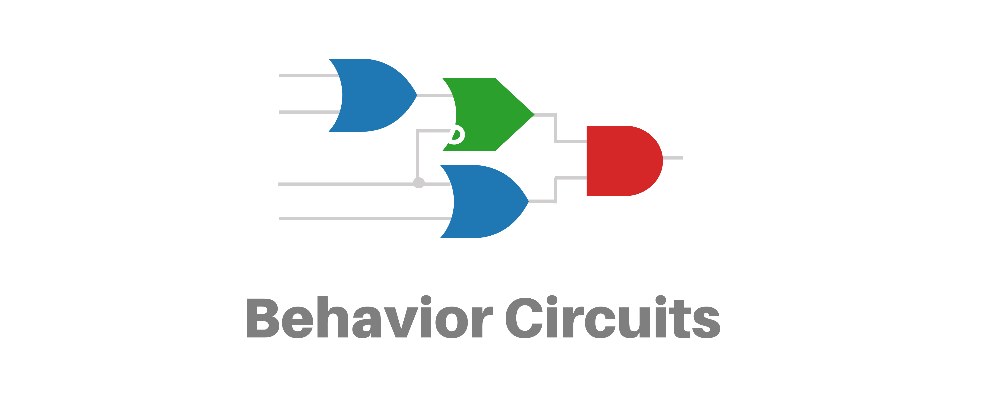

Behavior Circuits are an easy and intuitive toolkit to build intelligent agents for robotics or game design.
This website will show you what behavior circuits are, why they are useful and how to build your own circuits.